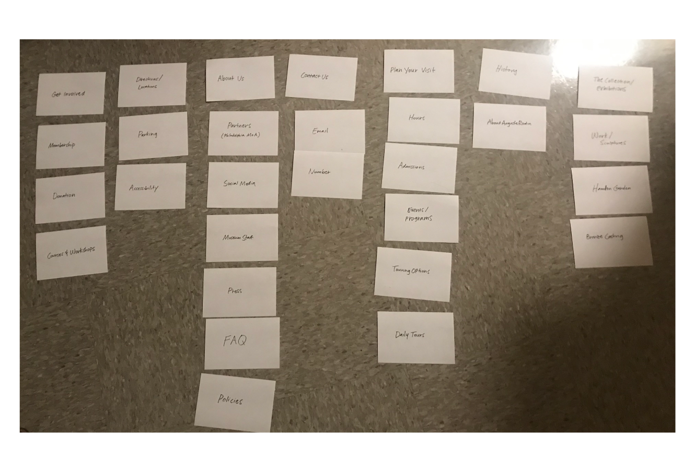
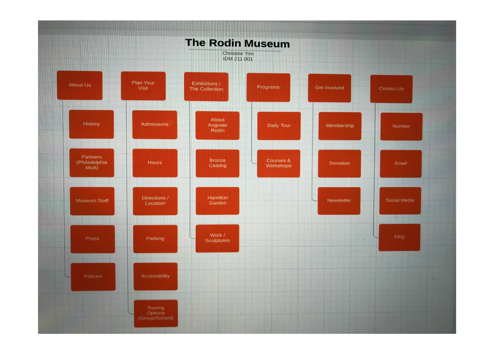

| PORTFOLIO
BACK
RODIN MUSEUM WEBSITE REDESIGN

The Rodin Museum is a popular attraction located at the heart of Philadelphia, Pennsylvania. The museum holds countless collections of Auguste Rodin’s works. These works include sculptures of varying sizes, drawings, paintings and studies. The museum also has a garden, attracting quite a lot of visitors throughout the year. Some of Rodin’s most famous works are in this museum: The Thinker, The Gates of Hell, and more.
CARD SORTING
 PROBLEM STATEMENT
Rodin’s works are described to be quite bold and intense. Unfortunately, the museum’s website did not reflect the tremendous, beautiful works that were stored in the physical museum. As mentioned, the amount of white space that created a thick border around the actual content had to be improved upon. To further, it wasn’t difficult to notice how colorless the overall website was as well. There were colors added from the images of the museum itself, but everything else that users would have to interact with was white. Simply put, the website was bland and boring. If the user were to delve deeper into the website, they would find artwork descriptions in white font color on top of a black background. This is still a very bland and minimal color use and transition. Not to mention, the typography was disappointing. There was not much engaging about the content, aside from all the images. One final problem to note about the original website was how difficult it was for users to get from one page to the next desired page. My goal for this project was to develop an aesthetic interface that would keep users engaged as they interacted with the website. This would ultimately lead them to be able to obtain information about the museum and even be able to learn about Rodin’s works on the website.
USERS & AUDIENCE
To confirm my initial theories about users wanting to or not wanting to continue using the website, I conducted quick interviews with people who have never seen the website. Along with the initial interviews I conducted, I also researched to see what age groups were more likely to attend museums and the reasons why. Briefly, older people were more open to visit museums at their leisure. Young adults and even teenagers visit museums mostly for educational purposes or for family vacations. At the very least, because most users would be in their early 20’s and older, I wanted to carefully decide upon which color theme and which typography arrangement to use for the website.
FINAL UI DESIGN